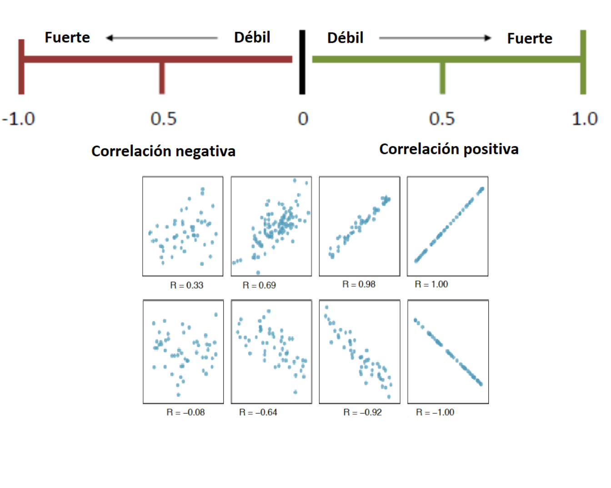
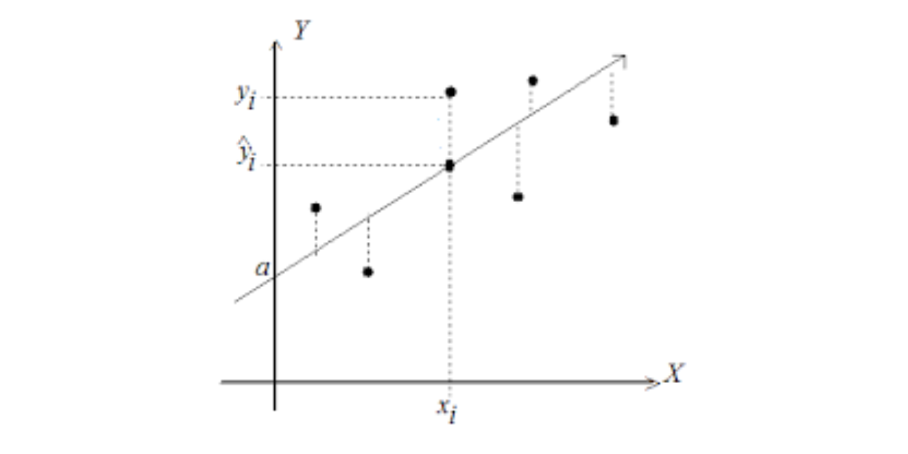

<!DOCTYPE html>

<html>

<head>

<meta charset="utf-8" />
<meta name="generator" content="pandoc" />
<meta http-equiv="X-UA-Compatible" content="IE=EDGE" />


<title>Regresión lineal</title>

<script src="site_libs/jquery-1.11.3/jquery.min.js"></script>
<meta name="viewport" content="width=device-width, initial-scale=1" />
<link href="site_libs/bootstrap-3.3.5/css/flatly.min.css" rel="stylesheet" />
<script src="site_libs/bootstrap-3.3.5/js/bootstrap.min.js"></script>
<script src="site_libs/bootstrap-3.3.5/shim/html5shiv.min.js"></script>
<script src="site_libs/bootstrap-3.3.5/shim/respond.min.js"></script>
<style>h1 {font-size: 34px;}
       h1.title {font-size: 38px;}
       h2 {font-size: 30px;}
       h3 {font-size: 24px;}
       h4 {font-size: 18px;}
       h5 {font-size: 16px;}
       h6 {font-size: 12px;}
       code {color: inherit; background-color: rgba(0, 0, 0, 0.04);}
       pre:not([class]) { background-color: white }</style>
<script src="site_libs/navigation-1.1/tabsets.js"></script>
<link href="site_libs/highlightjs-9.12.0/textmate.css" rel="stylesheet" />
<script src="site_libs/highlightjs-9.12.0/highlight.js"></script>
<link href="site_libs/font-awesome-5.1.0/css/all.css" rel="stylesheet" />
<link href="site_libs/font-awesome-5.1.0/css/v4-shims.css" rel="stylesheet" />
<link href="site_libs/ionicons-2.0.1/css/ionicons.min.css" rel="stylesheet" />
<link rel="icon" type="image/png" href="images/favicon.png" />

<script type="text/javascript" src="js/rmarkdown.js"></script>

<link rel="stylesheet" href="https://cdnjs.cloudflare.com/ajax/libs/font-awesome/4.7.0/css/font-awesome.min.css">

<script>
  (function(i,s,o,g,r,a,m){i['GoogleAnalyticsObject']=r;i[r]=i[r]||function(){
  (i[r].q=i[r].q||[]).push(arguments)},i[r].l=1*new Date();a=s.createElement(o),
  m=s.getElementsByTagName(o)[0];a.async=1;a.src=g;m.parentNode.insertBefore(a,m)
  })(window,document,'script','https://www.google-analytics.com/analytics.js','ga');
  ga('create', 'UA-88209726-1', 'auto');
  ga('send', 'pageview');
</script>

<style type="text/css">
  code{white-space: pre-wrap;}
  span.smallcaps{font-variant: small-caps;}
  span.underline{text-decoration: underline;}
  div.column{display: inline-block; vertical-align: top; width: 50%;}
  div.hanging-indent{margin-left: 1.5em; text-indent: -1.5em;}
  ul.task-list{list-style: none;}
    </style>

<style type="text/css">code{white-space: pre;}</style>
<script type="text/javascript">
if (window.hljs) {
  hljs.configure({languages: []});
  hljs.initHighlightingOnLoad();
  if (document.readyState && document.readyState === "complete") {
    window.setTimeout(function() { hljs.initHighlighting(); }, 0);
  }
}
</script>


<style type = "text/css">
.main-container {
  max-width: 940px;
  margin-left: auto;
  margin-right: auto;
}
img {
  max-width:100%;
}
.tabbed-pane {
  padding-top: 12px;
}
.html-widget {
  margin-bottom: 20px;
}
button.code-folding-btn:focus {
  outline: none;
}
summary {
  display: list-item;
}
pre code {
  padding: 0;
}
</style>


<style type="text/css">
.dropdown-submenu {
  position: relative;
}
.dropdown-submenu>.dropdown-menu {
  top: 0;
  left: 100%;
  margin-top: -6px;
  margin-left: -1px;
  border-radius: 0 6px 6px 6px;
}
.dropdown-submenu:hover>.dropdown-menu {
  display: block;
}
.dropdown-submenu>a:after {
  display: block;
  content: " ";
  float: right;
  width: 0;
  height: 0;
  border-color: transparent;
  border-style: solid;
  border-width: 5px 0 5px 5px;
  border-left-color: #cccccc;
  margin-top: 5px;
  margin-right: -10px;
}
.dropdown-submenu:hover>a:after {
  border-left-color: #adb5bd;
}
.dropdown-submenu.pull-left {
  float: none;
}
.dropdown-submenu.pull-left>.dropdown-menu {
  left: -100%;
  margin-left: 10px;
  border-radius: 6px 0 6px 6px;
}
</style>

<script type="text/javascript">
// manage active state of menu based on current page
$(document).ready(function () {
  // active menu anchor
  href = window.location.pathname
  href = href.substr(href.lastIndexOf('/') + 1)
  if (href === "")
    href = "index.html";
  var menuAnchor = $('a[href="' + href + '"]');

  // mark it active
  menuAnchor.tab('show');

  // if it's got a parent navbar menu mark it active as well
  menuAnchor.closest('li.dropdown').addClass('active');

  // Navbar adjustments
  var navHeight = $(".navbar").first().height() + 15;
  var style = document.createElement('style');
  var pt = "padding-top: " + navHeight + "px; ";
  var mt = "margin-top: -" + navHeight + "px; ";
  var css = "";
  // offset scroll position for anchor links (for fixed navbar)
  for (var i = 1; i <= 6; i++) {
    css += ".section h" + i + "{ " + pt + mt + "}\n";
  }
  style.innerHTML = "body {" + pt + "padding-bottom: 40px; }\n" + css;
  document.head.appendChild(style);
});
</script>

<!-- tabsets -->

<style type="text/css">
.tabset-dropdown > .nav-tabs {
  display: inline-table;
  max-height: 500px;
  min-height: 44px;
  overflow-y: auto;
  border: 1px solid #ddd;
  border-radius: 4px;
}

.tabset-dropdown > .nav-tabs > li.active:before {
  content: "";
  font-family: 'Glyphicons Halflings';
  display: inline-block;
  padding: 10px;
  border-right: 1px solid #ddd;
}

.tabset-dropdown > .nav-tabs.nav-tabs-open > li.active:before {
  content: "&#xe258;";
  border: none;
}

.tabset-dropdown > .nav-tabs.nav-tabs-open:before {
  content: "";
  font-family: 'Glyphicons Halflings';
  display: inline-block;
  padding: 10px;
  border-right: 1px solid #ddd;
}

.tabset-dropdown > .nav-tabs > li.active {
  display: block;
}

.tabset-dropdown > .nav-tabs > li > a,
.tabset-dropdown > .nav-tabs > li > a:focus,
.tabset-dropdown > .nav-tabs > li > a:hover {
  border: none;
  display: inline-block;
  border-radius: 4px;
  background-color: transparent;
}

.tabset-dropdown > .nav-tabs.nav-tabs-open > li {
  display: block;
  float: none;
}

.tabset-dropdown > .nav-tabs > li {
  display: none;
}
</style>

<!-- code folding -->


</head>

<body>


<div class="container-fluid main-container">


<div class="navbar navbar-default  navbar-fixed-top" role="navigation">
  <div class="container">
    <div class="navbar-header">
      <button type="button" class="navbar-toggle collapsed" data-toggle="collapse" data-target="#navbar">
        <span class="icon-bar"></span>
        <span class="icon-bar"></span>
        <span class="icon-bar"></span>
      </button>
      <a class="navbar-brand" href="index.html">Estadística ITM</a>
    </div>
    <div id="navbar" class="navbar-collapse collapse">
      <ul class="nav navbar-nav">
        
      </ul>
      <ul class="nav navbar-nav navbar-right">
        <li>
  <a href="pagin1.html">
    <span class="fas fa-line-chart"></span>
     
    Estadística Básica
  </a>
</li>
<li>
  <a href="pagin2.html">
    <span class="fas fa-bar-chart-o"></span>
     
    Estadística inferencial
  </a>
</li>
<li>
  <a href="pagin3.html">
    <span class="fas fa-pie-chart"></span>
     
    Análisis multivariado
  </a>
</li>
<li>
  <a href="about.html">
    <span class="fas fa-puzzle-piece"></span>
     
    Semillero de R
  </a>
</li>
<li>
  <a href="https://www.itm.edu.co">
    <span class="ion ion-university"></span>
     
  </a>
</li>
<li>
  <a href="https://github.com/estadisticaITM">
    <span class="fas fa-github"></span>
     
  </a>
</li>
      </ul>
    </div><!--/.nav-collapse -->
  </div><!--/.container -->
</div><!--/.navbar -->

<div id="header">


<h1 class="title toc-ignore">Regresión lineal</h1>

</div>


<div id="gráfico-de-dispersión" class="section level2">
<h2>Gráfico de dispersión</h2>
<p>Diagrama matemático que utiliza las coordenadas cartesianas para mostrar los valores de dos variables cuantitativas, de la forma (x,y), aunque también se puede incluir una variable cualitativa. Sirve para la detección de puntos atípicos.</p>
<p>En el siguiente diagrama se ilustra la presión atmosférica en relación a la temperatura</p>
<pre class="r"><code>plot(pressure)</code></pre>
<p></p>
<p>En el siguiente diagrama se ilustra el ancho y el largo de la hoja en relación al tipo de planta.</p>
<p></p>
<div id="actividad" class="section level3">
<h3>Actividad</h3>
<p>Elabore en su cuaderno un gráfico de dispersión de los siguientes datos, identificando con colores diferentes el tipo de tapa.</p>
<table>
<thead>
<tr class="header">
<th>Hojas</th>
<th>Peso</th>
<th>Tipo de tapa</th>
</tr>
</thead>
<tbody>
<tr class="odd">
<td>885</td>
<td>800</td>
<td>dura</td>
</tr>
<tr class="even">
<td>1016</td>
<td>950</td>
<td>dura</td>
</tr>
<tr class="odd">
<td>1125</td>
<td>1050</td>
<td>dura</td>
</tr>
<tr class="even">
<td>239</td>
<td>350</td>
<td>dura</td>
</tr>
<tr class="odd">
<td>701</td>
<td>750</td>
<td>dura</td>
</tr>
<tr class="even">
<td>641</td>
<td>600</td>
<td>dura</td>
</tr>
<tr class="odd">
<td>1228</td>
<td>1075</td>
<td>dura</td>
</tr>
<tr class="even">
<td>412</td>
<td>250</td>
<td>blanda</td>
</tr>
<tr class="odd">
<td>953</td>
<td>700</td>
<td>blanda</td>
</tr>
<tr class="even">
<td>929</td>
<td>650</td>
<td>blanda</td>
</tr>
<tr class="odd">
<td>1492</td>
<td>975</td>
<td>blanda</td>
</tr>
<tr class="even">
<td>419</td>
<td>350</td>
<td>blanda</td>
</tr>
<tr class="odd">
<td>1010</td>
<td>950</td>
<td>blanda</td>
</tr>
<tr class="even">
<td>595</td>
<td>425</td>
<td>blanda</td>
</tr>
<tr class="odd">
<td>1034</td>
<td>725</td>
<td>blanda</td>
</tr>
</tbody>
</table>
</div>
</div>
<div id="regresión-lineal" class="section level2">
<h2>Regresión lineal</h2>
<p>Permite establecer asociaciones entre variables de interés, entre las cuáles la relación usual no es necesariamente de causa efecto.</p>
<p>El objetivo es obtener estimaciones razonables de Y para distintos valores de X a partir de una muestra de n pares de valores (x1, y1), . . . ,(xn, yn).</p>
</div>
<div id="algunos-ejemplos" class="section level2">
<h2>Algunos ejemplos</h2>
<ul>
<li><p>Estudiar cómo influye la estatura del padre sobre la estatura del hijo.</p></li>
<li><p>Estimar el precio de una vivienda en función de su área.</p></li>
<li><p>Estudiar la relación entre el estrato de la vivienda y el pago del impuesto predial</p></li>
</ul>
</div>
<div id="antes-de-hacer-un-modelo-de-regresión-lineal" class="section level2">
<h2>Antes de hacer un modelo de regresión lineal</h2>
<p>Se deben identificar observaciones extremas, alejadas hacia valores muy grandes o pequeños comparadas con el resto de valores, que puedan influenciar en la estimación de los parámetros del ajuste de regresión.</p>
</div>
<div id="modelo-de-regresión-lineal-básico" class="section level2">
<h2>Modelo de regresión lineal básico</h2>
<p>El modelo más simple de regresión corresponde a:</p>
<p><span class="math display">\[\Large y_i=\beta_0 +\beta_1 X_i+\varepsilon_i\]</span> Donde:</p>
<p><span class="math inline">\(\Large y_i\)</span>Es la variable respuesta o dependiente para la i-ésima observación<br />
</p>
<p><span class="math inline">\(\Large \beta_0\)</span> Intercepto<br />
</p>
<p><span class="math inline">\(\Large\beta_1\)</span> Pendiente<br />
</p>
<p><span class="math inline">\(\Large X_i\)</span> Variable predictora independiente para la i-ésima observación<br />
</p>
<p><span class="math inline">\(\Large \varepsilon_i\)</span> Error aleatorio para la i-ésima observación<br />
</p>
<p><span class="math display">\[\Large \varepsilon_i \sim N (0,\sigma^2)\]</span></p>
</div>
<div id="objetivos-de-la-regresión-lineal" class="section level2">
<h2>Objetivos de la regresión lineal</h2>
<ul>
<li><p>Construir un modelo que describa el efecto o relación entre una variable X sobre otra variable Y.</p></li>
<li><p>Obtener estimaciones puntuales de los parámetros de dicho modelo.</p></li>
<li><p>Estimar el valor promedio de Y para un valor de X</p></li>
<li><p>Predecir futuros de la variable respuesta Y</p></li>
</ul>
</div>
<div id="medidas-de-dependencia-lineal" class="section level1">
<h1>Medidas de dependencia lineal</h1>
<div id="covarianza" class="section level2">
<h2>Covarianza</h2>
<p>La covarianza indica el grado de variación conjunta de dos variables aleatorias respecto a sus medias</p>
<p><span class="math display">\[\Large cov(x,y)=\frac{\sum_{i=1}^{n}(x_i-\bar{x})(y_i-\bar{y})}{(n-1)}\]</span> - Si hay relación lineal positiva, la covarianza será positiva y grande.</p>
<ul>
<li><p>Si hay relación lineal negativa, la covarianza será negativa y grande en valor absoluto.</p></li>
<li><p>Si no hay relación entre las variables la covarianza será próxima a cero.</p></li>
<li><p>La covarianza depende de las unidades de medida de las variables.</p></li>
</ul>
</div>
<div id="coeficiente-de-correlación" class="section level2">
<h2>Coeficiente de correlación</h2>
<p>Indica la fuerza y la dirección de una relación lineal y proporcionalidad entre dos variables cuantitativas estadísticas, la fórmula es:</p>
<p><span class="math display">\[\Large cor(x,y)=\frac{\sum_{i=1}^{n}(x_i-\bar{x})(y_i-\bar{y})}
{\sqrt{\sum_{i=1}^{n}(x_i-\bar{x})^2\sum_{i=1}^{n}(y_i-\bar{y})^2 }}\]</span></p>
</div>
<div id="características-del-coeficiente-de-correlación" class="section level2">
<h2>Características del coeficiente de correlación</h2>
<ul>
<li><p>Rango entre -1 y 1</p></li>
<li><p>Valores cercanos a -1 la relación es fuertemente negativa.</p></li>
<li><p>Valores cercanos a 1 la relación es fuertemente positiva.</p></li>
<li><p>Valores cercanos a 0 la relación es débil, es decir no hay una relación lineal</p></li>
</ul>
<p></p>
</div>
<div id="medida-de-bondad-de-ajuste-r2" class="section level2">
<h2>Medida de bondad de ajuste R^2</h2>
<p>El coeficiente determina la calidad del modelo para replicar los resultados. Mide la proporción de la variabilidad total observada en la respuesta que es explicada por la asociación lineal. En regresión lineal el R cuadrado es simplemente el cuadrado del coeficiente de correlación de Pearson, Por ser una proporción, esta cantidad varía entre 0 y 1, mientras más cercano sea a uno mejor.</p>
</div>
<div id="estimador-de-mínimos-cuadrados" class="section level2">
<h2>Estimador de mínimos cuadrados</h2>
<p>Gauss propuso en 1809 el método de mínimos cuadrados para obtener los valores <span class="math inline">\(\hat{\beta_0}, \hat {\beta_1}\)</span> que mejor se ajustan a los datos:</p>
<p><span class="math display">\[\Large y_i=\beta_0+\beta_1x_i+\varepsilon_i\]</span></p>
<p>El método consiste en minimizar la suma de los cuadrados de las distancias verticales entre los datos y las estimaciones, es decir, minimizar la suma de los residuos al cuadrado:</p>
<p><span class="math display">\[\sum_{i=1}^n(y_i-\hat{y_i})^2=
\sum_{i=1}^n (y_i-(\hat{\beta_0}+ \hat{\beta_1}x_i))^2\]</span></p>
<p>El resultado que se obtiene es:</p>
<p><span class="math display">\[\Large \hat{\beta_1}=\frac{S_{xy}}{S_{xx}}=\frac{cov(x,y)}{S_{xx}}=\frac{\sum_{i=1}^{n}(x_i-\bar{x})(y_i-\bar{y})}{\sum_{i=1}^{n}(x_i-\bar{x})^2}\]</span></p>
<p>A las cantidades <span class="math inline">\(\Large S_{xx}\)</span> y <span class="math inline">\(\Large S_{xy}\)</span> se les conoce como suma corregida de cuadrados y suma corregida de productos cruzados de x y y, respectivamente</p>
<p><span class="math display">\[\Large \hat{\beta_0}=\bar{y}-\hat{\beta_1}\bar{x}\]</span></p>
<p></p>
</div>
<div id="residuales" class="section level2">
<h2>Residuales</h2>
<p>La diferencia de cada valor <span class="math inline">\(y_i\)</span> de la variable respuesta y su estimación <span class="math inline">\(\hat{y_i}\)</span> se llama residuo. <span class="math display">\[\Large \varepsilon_i= y_i- \hat{y_i}\]</span></p>
<p></p>
</div>
<div id="cómo-obtener-un-modelo-de-regresión-lineal-simple" class="section level2">
<h2>Cómo obtener un modelo de regresión lineal simple</h2>
<ul>
<li>Cómo estimar un modelo de regresión lineal en la calculadora</li>
</ul>
<iframe width="560" height="315" src="https://www.youtube.com/embed/4_WO31Dapv0" frameborder="0" allow="accelerometer; autoplay; encrypted-media; gyroscope; picture-in-picture" allowfullscreen>
</iframe>
<ul>
<li>Cómo estimar un modelo de regresión lineal en Excel</li>
</ul>
<iframe width="560" height="315" src="https://www.youtube.com/embed/O7iPNwfZFcE" frameborder="0" allow="accelerometer; autoplay; encrypted-media; gyroscope; picture-in-picture" allowfullscreen>
</iframe>
</div>
<div id="regresión-lineal-múltiple" class="section level2">
<h2>Regresión lineal múltiple</h2>
<p>Considere el caso en el cual se desea modelar la variabilidad total de una variable respuesta de interés, en función de relaciones lineales con dos o más variables predictoras, formuladas simultáneamente en un único modelo. Suponemos en principio que las variables predictoras guardan poca asociación lineal entre sí, es decir, cada variable predictora aporta información independiente de las demás predictoras presentes en el modelo (hasta cierto grado, la información aportada por cada una no es redundante). La ecuación del modelo de regresión en este caso es:</p>
<p><span class="math display">\[\Large y_i=\beta_0+\beta_1x_{i1}+\beta_2x_{i2}+...+\beta_kx_{ik}\varepsilon_i\]</span></p>
</div>
<div id="tipos-de-variables-y-de-efectos-en-los-modelos" class="section level2">
<h2>Tipos de variables y de efectos en los modelos</h2>
<p>Las variables predictoras pueden ser:  Cuantitativas, caso en el cual se supone se miden sin error (o el error es despreciable).</p>
<p> Cualitativas o categóricas, en este caso su manejo en el modelo se realiza a través de la definición de variables indicadoras, las cuales toman valores de 0 ó 1.</p>
<p>Por ejemplo, suponga que en un modelo de regresión para el gasto mensual por familia en actividades recreativas, se tiene entre las variables predictoras el estrato socioeconómico, definido en cinco niveles, luego, para cada nivel se define una variable indicadora.</p>
<p>Por ejemplo, suponga que en un modelo de regresión para el gasto mensual por familia en actividades recreativas, se tiene entre las variables predictoras el estrato socioeconómico, definido en cinco niveles, luego, para cada nivel se define una variable indicadora de la siguiente forma:</p>
<p>Estrato 1: <span class="math display">\[ \Large  I_1 =\left\lbrace \begin{array}{rcl}
            {1\quad familia \quad estrato \quad 1}
         \\
            {0 \quad En \quad otro \quad caso  }
         \end{array}  \right. \]</span></p>
<p>Estrato 2</p>
<p><span class="math display">\[ \Large   I_2 =\left\lbrace   \begin{array}{rcl}
            {1\quad familia \quad estrato \quad 2}
            \\
            {0 \quad En \quad otro \quad caso  }
         \end{array}  \right.          \]</span> Estrato 3</p>
<p><span class="math display">\[ \Large  I_3 =\left\lbrace   \begin{array}{rcl}
            {1\quad familia \quad estrato \quad 3}
         \\
            {0 \quad En \quad otro \quad caso  }
         \end{array}  \right.  \]</span></p>
<p>Estrato 4 <span class="math display">\[    \Large I_4 =\left\lbrace   \begin{array}{rcl}
            {1\quad familia \quad estrato \quad 4}
         \\
            {0 \quad En \quad otro \quad caso  }
         \end{array}  \right.\]</span></p>
<p>En general, una variable cualitativa con c clases se representa mediante c -1 variables indicadoras, puesto que cuando en una observación dada, todas las c-1 primeras indicadoras son iguales a cero, entonces la variable cualitativa se haya en su última clase. En el ejemplo anterior basta definir las primeras cuatro indicadoras.</p>
<iframe width="560" height="315" src="https://www.youtube.com/embed/eG5tI6aYgos" frameborder="0" allow="accelerometer; autoplay; encrypted-media; gyroscope; picture-in-picture" allowfullscreen>
</iframe>
</div>
<div id="ejemplo" class="section level2">
<h2>Ejemplo:</h2>
<p>La siguiente base de datos relaciona 7 medidas del crecimiento de 5 tipos de arboles en el tiempo en meses y el diámetro en mm.</p>
<pre class="r"><code>head (Orange)</code></pre>
<pre><code>##   Tree  age circumference
## 1    1  118            30
## 2    1  484            58
## 3    1  664            87
## 4    1 1004           115
## 5    1 1231           120
## 6    1 1372           142</code></pre>
<p>El diagrama de dispersión simple es:</p>
<pre class="r"><code>plot(Orange$age,Orange$circumference,lwd=3)</code></pre>
<p></p>
<p>El modelo de regresión lineal simple corresponde a:</p>
<pre class="r"><code>model=lm(Orange$circumference~Orange$age)
summary(model)</code></pre>
<pre><code>## 
## Call:
## lm(formula = Orange$circumference ~ Orange$age)
## 
## Residuals:
##     Min      1Q  Median      3Q     Max 
## -46.310 -14.946  -0.076  19.697  45.111 
## 
## Coefficients:
##              Estimate Std. Error t value Pr(&gt;|t|)    
## (Intercept) 17.399650   8.622660   2.018   0.0518 .  
## Orange$age   0.106770   0.008277  12.900 1.93e-14 ***
## ---
## Signif. codes:  0 &#39;***&#39; 0.001 &#39;**&#39; 0.01 &#39;*&#39; 0.05 &#39;.&#39; 0.1 &#39; &#39; 1
## 
## Residual standard error: 23.74 on 33 degrees of freedom
## Multiple R-squared:  0.8345, Adjusted R-squared:  0.8295 
## F-statistic: 166.4 on 1 and 33 DF,  p-value: 1.931e-14</code></pre>
<p>La ecuación del modelo de regresión general es:</p>
<p><span class="math display">\[\Large \hat y_i=17.4+0.1x_{i}\]</span> Donde <span class="math inline">\(y_i\)</span> es la circunferenciua del</p>
<p>La linea de regresión ajustada corresponde a</p>
<pre class="r"><code>model=lm(Orange$circumference~Orange$age)


plot(Orange$age,Orange$circumference,lwd=3)

yest=fitted(model)
lines(Orange$age,yest,col=2)
abline(coef(model))</code></pre>
<p></p>
</div>
<div id="significado-de-la-pendiente-y-el-intercepto" class="section level2">
<h2>Significado de la pendiente y el intercepto</h2>
<p>El intercepto es la respuesta media observada en el crecimiento de los arboles.</p>
<p>La péndiente indica que por cada mes que pasa la circunferencia del arbol aumenta 0.1 unidades</p>
<p>El diagrama de dispersión discriminando por los niveles de la variables factor es:</p>
<pre class="r"><code>plot(Orange$age,Orange$circumference,col=Orange$Tree,lwd=3)</code></pre>
<p></p>
<p>El modelo de regresión lineal con factores corresponde a</p>
<pre class="r"><code>model=lm(Orange$circumference~Orange$age+as.factor(Orange$Tree))
summary(model)</code></pre>
<pre><code>## 
## Call:
## lm(formula = Orange$circumference ~ Orange$age + as.factor(Orange$Tree))
## 
## Residuals:
##     Min      1Q  Median      3Q     Max 
## -30.505  -8.790   3.737   7.650  21.859 
## 
## Coefficients:
##                           Estimate Std. Error t value Pr(&gt;|t|)    
## (Intercept)              17.399650   5.543461   3.139  0.00388 ** 
## Orange$age                0.106770   0.005321  20.066  &lt; 2e-16 ***
## as.factor(Orange$Tree).L 39.935049   5.768048   6.923 1.31e-07 ***
## as.factor(Orange$Tree).Q  2.519892   5.768048   0.437  0.66544    
## as.factor(Orange$Tree).C -8.267097   5.768048  -1.433  0.16248    
## as.factor(Orange$Tree)^4 -4.695541   5.768048  -0.814  0.42224    
## ---
## Signif. codes:  0 &#39;***&#39; 0.001 &#39;**&#39; 0.01 &#39;*&#39; 0.05 &#39;.&#39; 0.1 &#39; &#39; 1
## 
## Residual standard error: 15.26 on 29 degrees of freedom
## Multiple R-squared:  0.9399, Adjusted R-squared:  0.9295 
## F-statistic:  90.7 on 5 and 29 DF,  p-value: &lt; 2.2e-16</code></pre>
<p>La recta general del modelo es:</p>
<p><span class="math display">\[\Large \hat y_i=17.4+0.1x_{i}+39.93arbol2_i+2.51arbol3_i-8.26arbol4_i-4.69arbol5_i\]</span></p>
<p>Las rectas ajustadas para cada arbol son:</p>
<p>Arbol 1:</p>
<p><span class="math display">\[\Large \hat y_i=17.4+0.1x_{i}\]</span></p>
<p>Arbol 2: <span class="math display">\[\Large \hat y_i=57.33+0.1x_{i}\]</span> Arbol 3: <span class="math display">\[\Large \hat y_i=19.92+0.1x_{i}\]</span></p>
<p>Arbol 4: <span class="math display">\[\Large \hat y_i=9.14+0.1x_{i}\]</span> Arbol 5: <span class="math display">\[\Large \hat y_i=12.71+0.1x_{i}\]</span></p>
</div>
</div>

<br>
<hr>
<p><center>Copyright &copy; 2019, webpage made with Rmarkdown.</center></p>
<hr>


</div>

<script>

// add bootstrap table styles to pandoc tables
function bootstrapStylePandocTables() {
  $('tr.odd').parent('tbody').parent('table').addClass('table table-condensed');
}
$(document).ready(function () {
  bootstrapStylePandocTables();
});


</script>

<!-- tabsets -->

<script>
$(document).ready(function () {
  window.buildTabsets("TOC");
});

$(document).ready(function () {
  $('.tabset-dropdown > .nav-tabs > li').click(function () {
    $(this).parent().toggleClass('nav-tabs-open');
  });
});
</script>

<!-- code folding -->


<!-- dynamically load mathjax for compatibility with self-contained -->
<script>
  (function () {
    var script = document.createElement("script");
    script.type = "text/javascript";
    script.src  = "https://mathjax.rstudio.com/latest/MathJax.js?config=TeX-AMS-MML_HTMLorMML";
    document.getElementsByTagName("head")[0].appendChild(script);
  })();
</script>

</body>
</html>
